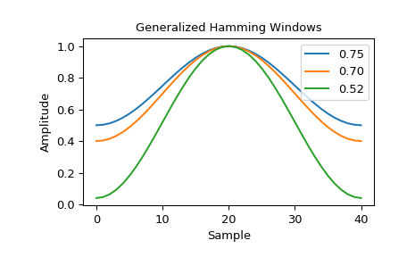
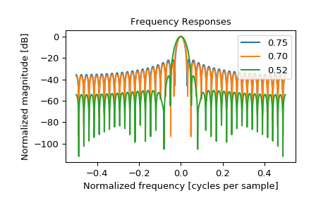

scipy.signal.windows.general_hamming¶
-
scipy.signal.windows.general_hamming(M, alpha, sym=True)[source]¶ Return a generalized Hamming window.
The generalized Hamming window is constructed by multiplying a rectangular window by one period of a cosine function [1].
- Parameters
- Mint
Number of points in the output window. If zero or less, an empty array is returned.
- alphafloat
The window coefficient, \(\alpha\)
- symbool, optional
When True (default), generates a symmetric window, for use in filter design. When False, generates a periodic window, for use in spectral analysis.
- Returns
- wndarray
The window, with the maximum value normalized to 1 (though the value 1 does not appear if M is even and sym is True).
Notes
The generalized Hamming window is defined as
\[w(n) = \alpha - \left(1 - \alpha\right) \cos\left(\frac{2\pi{n}}{M-1}\right) \qquad 0 \leq n \leq M-1\]Both the common Hamming window and Hann window are special cases of the generalized Hamming window with \(\alpha\) = 0.54 and \(\alpha\) = 0.5, respectively [2].
References
- 1
DSPRelated, “Generalized Hamming Window Family”, https://www.dsprelated.com/freebooks/sasp/Generalized_Hamming_Window_Family.html
- 2
Wikipedia, “Window function”, https://en.wikipedia.org/wiki/Window_function
- 3
Riccardo Piantanida ESA, “Sentinel-1 Level 1 Detailed Algorithm Definition”, https://sentinel.esa.int/documents/247904/1877131/Sentinel-1-Level-1-Detailed-Algorithm-Definition
- 4
Matthieu Bourbigot ESA, “Sentinel-1 Product Definition”, https://sentinel.esa.int/documents/247904/1877131/Sentinel-1-Product-Definition
Examples
The Sentinel-1A/B Instrument Processing Facility uses generalized Hamming windows in the processing of spaceborne Synthetic Aperture Radar (SAR) data [3]. The facility uses various values for the \(\alpha\) parameter based on operating mode of the SAR instrument. Some common \(\alpha\) values include 0.75, 0.7 and 0.52 [4]. As an example, we plot these different windows.
>>> from scipy.signal.windows import general_hamming >>> from scipy.fft import fft, fftshift >>> import matplotlib.pyplot as plt
>>> fig1, spatial_plot = plt.subplots() >>> spatial_plot.set_title("Generalized Hamming Windows") >>> spatial_plot.set_ylabel("Amplitude") >>> spatial_plot.set_xlabel("Sample")
>>> fig2, freq_plot = plt.subplots() >>> freq_plot.set_title("Frequency Responses") >>> freq_plot.set_ylabel("Normalized magnitude [dB]") >>> freq_plot.set_xlabel("Normalized frequency [cycles per sample]")
>>> for alpha in [0.75, 0.7, 0.52]: ... window = general_hamming(41, alpha) ... spatial_plot.plot(window, label="{:.2f}".format(alpha)) ... A = fft(window, 2048) / (len(window)/2.0) ... freq = np.linspace(-0.5, 0.5, len(A)) ... response = 20 * np.log10(np.abs(fftshift(A / abs(A).max()))) ... freq_plot.plot(freq, response, label="{:.2f}".format(alpha)) >>> freq_plot.legend(loc="upper right") >>> spatial_plot.legend(loc="upper right")
